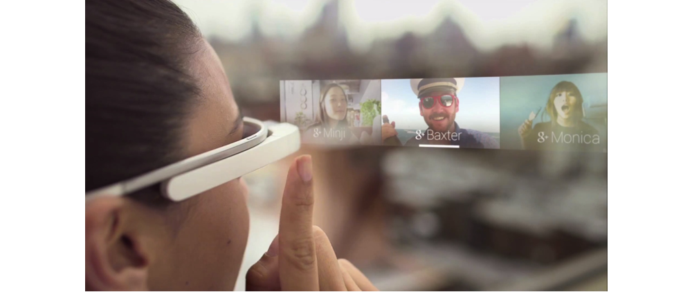
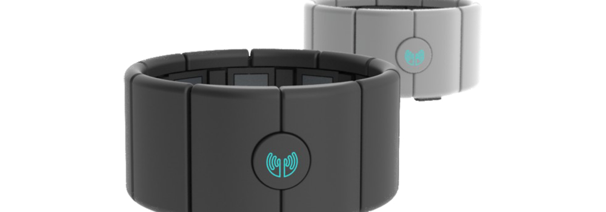

Dive into Wearable Device and IOT
Reverse Rock, Paper, MYO iOS Game App 2014
I participated in Y Combinator's first hackathon 2014 and
my team won the Prize, Apportable Sponcer Award
by implementing with API of the wearable device called Myo.

There are so many API Sponcer related to wearable or IOT such as Oculus Rift,
Google Glass, Airware(Drone), Thalmic(Myo), Pebble, Wit.ai and Estimote(Beacon) at the Hackathon.
Oculus Rift

Beacon
Google Glass

Airware
In those wearable device, drone and IOT APIs,
we decided to use Myo API and Got permission from Thalmic to make one Game appliaction with Myo.
This game allows you to use Myo to control hand movement gestures
to play a game of "Rock, Paper, Scissors" with a twist.
Instead of trying to win the game based on the original strategy,
the objective is to purposely lose to gain points, within the time frame set.
On the screen, the player would be presented with a computer generated move
(either rock, paper, "scissors") that he/she would have to counter-attack with
his/her own move in order to gain a point.

If the player incorrectly makes a wrong move,
the timer runs all the way down to zero, and the game ends.
If the player makes the same gesture move as the generator, the game ignores the move,
and the player is allowed to play another gesture move.